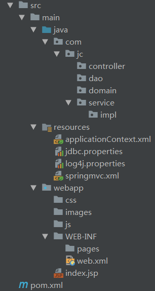

SSM1
sql语句在dao接口的各个方法上
目录结构：

pom.xml
<?xml version="1.0" encoding="UTF-8"?>
<project xmlns="http://maven.apache.org/POM/4.0.0" xmlns:xsi="http://www.w3.org/2001/XMLSchema-instance"
xsi:schemaLocation="http://maven.apache.org/POM/4.0.0 http://maven.apache.org/xsd/maven-4.0.0.xsd">
<modelVersion>4.0.0</modelVersion>
<groupId>com.jc</groupId>
<artifactId>myssm01</artifactId>
<version>1.0-SNAPSHOT</version>
<packaging>war</packaging>
<name>myssm01 Maven Webapp</name>
<!-- FIXME change it to the project's website -->
<url>http://www.example.com</url>
<properties>
<project.build.sourceEncoding>UTF-8</project.build.sourceEncoding>
<maven.compiler.source>1.8</maven.compiler.source>
<maven.compiler.target>1.8</maven.compiler.target>
<spring.version>5.0.2.RELEASE</spring.version>
<slf4j.version>1.6.6</slf4j.version>
<log4j.version>1.2.12</log4j.version>
<mysql.version>5.1.6</mysql.version>
<mybatis.version>3.4.5</mybatis.version>
</properties>
<dependencies>
<!-- spring -->
<dependency>
<groupId>org.aspectj</groupId>
<artifactId>aspectjweaver</artifactId>
<version>1.6.8</version>
</dependency>
<dependency>
<groupId>org.springframework</groupId>
<artifactId>spring-aop</artifactId>
<version>${spring.version}</version>
</dependency>
<dependency>
<groupId>org.springframework</groupId>
<artifactId>spring-context</artifactId>
<version>${spring.version}</version>
</dependency>
<dependency>
<groupId>org.springframework</groupId>
<artifactId>spring-web</artifactId>
<version>${spring.version}</version>
</dependency>
<dependency>
<groupId>org.springframework</groupId>
<artifactId>spring-webmvc</artifactId>
<version>${spring.version}</version>
</dependency>
<dependency>
<groupId>org.springframework</groupId>
<artifactId>spring-test</artifactId>
<version>${spring.version}</version>
</dependency>
<dependency>
<groupId>org.springframework</groupId>
<artifactId>spring-tx</artifactId>
<version>${spring.version}</version>
</dependency>
<dependency>
<groupId>org.springframework</groupId>
<artifactId>spring-jdbc</artifactId>
<version>${spring.version}</version>
</dependency>
<dependency>
<groupId>junit</groupId>
<artifactId>junit</artifactId>
<version>4.12</version>
<scope>compile</scope>
</dependency>
<dependency>
<groupId>mysql</groupId>
<artifactId>mysql-connector-java</artifactId>
<version>${mysql.version}</version>
</dependency>
<dependency>
<groupId>javax.servlet</groupId>
<artifactId>servlet-api</artifactId>
<version>2.5</version>
<scope>provided</scope>
</dependency>
<dependency>
<groupId>javax.servlet.jsp</groupId>
<artifactId>jsp-api</artifactId>
<version>2.0</version>
<scope>provided</scope>
</dependency>
<dependency>
<groupId>jstl</groupId>
<artifactId>jstl</artifactId>
<version>1.2</version>
</dependency>
<!-- log start -->
<dependency>
<groupId>log4j</groupId>
<artifactId>log4j</artifactId>
<version>${log4j.version}</version>
</dependency>
<dependency>
<groupId>org.slf4j</groupId>
<artifactId>slf4j-api</artifactId>
<version>${slf4j.version}</version>
</dependency>
<dependency>
<groupId>org.slf4j</groupId>
<artifactId>slf4j-log4j12</artifactId>
<version>${slf4j.version}</version>
</dependency>
<!-- log end -->
<dependency>
<groupId>org.mybatis</groupId>
<artifactId>mybatis</artifactId>
<version>${mybatis.version}</version>
</dependency>
<dependency>
<groupId>org.mybatis</groupId>
<artifactId>mybatis-spring</artifactId>
<version>1.3.0</version>
</dependency>
<dependency>
<groupId>c3p0</groupId>
<artifactId>c3p0</artifactId>
<version>0.9.1.2</version>
<type>jar</type>
<scope>compile</scope>
</dependency>
</dependencies>
<build>
<finalName>myssm01</finalName>
<pluginManagement><!-- lock down plugins versions to avoid using Maven defaults (may be moved to parent pom) -->
<plugins>
<plugin>
<artifactId>maven-clean-plugin</artifactId>
<version>3.1.0</version>
</plugin>
<!-- see http://maven.apache.org/ref/current/maven-core/default-bindings.html#Plugin_bindings_for_war_packaging -->
<plugin>
<artifactId>maven-resources-plugin</artifactId>
<version>3.0.2</version>
</plugin>
<plugin>
<artifactId>maven-compiler-plugin</artifactId>
<version>3.8.0</version>
</plugin>
<plugin>
<artifactId>maven-surefire-plugin</artifactId>
<version>2.22.1</version>
</plugin>
<plugin>
<artifactId>maven-war-plugin</artifactId>
<version>3.2.2</version>
</plugin>
<plugin>
<artifactId>maven-install-plugin</artifactId>
<version>2.5.2</version>
</plugin>
<plugin>
<artifactId>maven-deploy-plugin</artifactId>
<version>2.8.2</version>
</plugin>
<plugin>
<groupId>org.apache.maven.plugins</groupId>
<artifactId>maven-compiler-plugin</artifactId>
<configuration>
<source>1.8</source>
<target>1.8</target>
</configuration>
</plugin>
</plugins>
</pluginManagement>
</build>
</project>
jdbc.properties
jdbc.driver=com.mysql.jdbc.Driver
jdbc.url=jdbc:mysql:///ssm?useUnicode=true&characterEncoding=utf8
jdbc.username=root
jdbc.password=rootapplicationContext.xml
Spring整合Mybatis
- 开启注解的扫描，只扫描service和dao，controller不需要spring去处理
- 整合Mybatis
- 导入数据库配置文件jdbc.properties
- 配置连接池属性
- 配置SqlSessionFactor工厂
- Spring配置
- 配置Dao接口所在包，用来告诉生成哪些接口的代理对象
- 配置事务管理器（注入数据库）
- 配置事务通知
- 配置AOP增强
<?xml version="1.0" encoding="UTF-8"?>
<beans xmlns="http://www.springframework.org/schema/beans"
xmlns:xsi="http://www.w3.org/2001/XMLSchema-instance"
xmlns:context="http://www.springframework.org/schema/context"
xmlns:aop="http://www.springframework.org/schema/aop"
xmlns:tx="http://www.springframework.org/schema/tx"
xsi:schemaLocation="http://www.springframework.org/schema/beans
http://www.springframework.org/schema/beans/spring-beans.xsd
http://www.springframework.org/schema/context
http://www.springframework.org/schema/context/spring-context.xsd
http://www.springframework.org/schema/aop
http://www.springframework.org/schema/aop/spring-aop.xsd
http://www.springframework.org/schema/tx
http://www.springframework.org/schema/tx/spring-tx.xsd">
<!--开启注解的扫描，希望处理service和dao，controller不需要Spring框架去处理-->
<context:component-scan base-package="com.jc">
<!--配置哪些注解不扫描-->
<!--exclude表示不扫描 type="annotation"表示按注解来剔除不扫描的，ctrl+N搜索Controller注解，
搜索的时候选中不包含项目类搜索 搜索到该注解后 选中右击，copy reference复制全路径到expression中-->
<context:exclude-filter type="annotation" expression="org.springframework.stereotype.Controller"/>
</context:component-scan>
<!--Spring整合MyBatis框架-->
<!-- 导入数据库连接属性的配置文件 -->
<context:property-placeholder location="classpath:jdbc.properties" />
<!--配置连接池-->
<bean id="dataSource" class="com.mchange.v2.c3p0.ComboPooledDataSource">
<property name="driverClass" value="${jdbc.driver}"/>
<property name="jdbcUrl" value="${jdbc.url}"/>
<property name="user" value="${jdbc.username}"/>
<property name="password" value="${jdbc.password}"/>
</bean>
<!--配置SqlSessionFactory工厂-->
<!--有了工厂，就能拿到session 从而创建代理，再把代理存进容器-->
<bean id="sqlSessionFactory" class="org.mybatis.spring.SqlSessionFactoryBean">
<property name="dataSource" ref="dataSource" />
</bean>
<!--配置AccountDao接口所在包-->
<!--告诉生成哪些接口的代理对象-->
<bean id="mapperScanner" class="org.mybatis.spring.mapper.MapperScannerConfigurer">
<property name="basePackage" value="com.jc.dao"/>
</bean>
<!--配置Spring框架声明式事务管理-->
<!--配置事务管理器-->
<bean id="transactionManager" class="org.springframework.jdbc.datasource.DataSourceTransactionManager">
<property name="dataSource" ref="dataSource" />
</bean>
<!--配置事务通知-->
<tx:advice id="txAdvice" transaction-manager="transactionManager">
<tx:attributes>
<tx:method name="find*" read-only="true"/>
<tx:method name="*" isolation="DEFAULT"/>
</tx:attributes>
</tx:advice>
<!--配置AOP增强-->
<aop:config>
<!-- 配置切入点表达式-->
<aop:pointcut id="pt1" expression="execution(* com.jc.service.impl.*ServiceImpl.*(..))"></aop:pointcut>
<!--建立切入点表达式和事务通知的对应关系 -->
<aop:advisor advice-ref="txAdvice" pointcut-ref="pt1"></aop:advisor>
</aop:config>
</beans>springmvc.xml
- 开启注解扫描，只扫描Controller注解
- 配置视图解析器对象
- 过滤静态资源
- 开启SpringMVC注解的支持
<?xml version="1.0" encoding="UTF-8"?>
<beans xmlns="http://www.springframework.org/schema/beans"
xmlns:mvc="http://www.springframework.org/schema/mvc"
xmlns:context="http://www.springframework.org/schema/context"
xmlns:xsi="http://www.w3.org/2001/XMLSchema-instance"
xsi:schemaLocation="
http://www.springframework.org/schema/beans
http://www.springframework.org/schema/beans/spring-beans.xsd
http://www.springframework.org/schema/mvc
http://www.springframework.org/schema/mvc/spring-mvc.xsd
http://www.springframework.org/schema/context
http://www.springframework.org/schema/context/spring-context.xsd">
<!--开启注解扫描，只扫描Controller注解-->
<context:component-scan base-package="com.jc">
<context:include-filter type="annotation" expression="org.springframework.stereotype.Controller" />
<!--include表示，扫描所要包含的，type="annotation"表示要扫描的类型为注解，expression为所要扫描的Controller注解所在位置-->
</context:component-scan>
<!--配置的视图解析器对象-->
<bean id="internalResourceViewResolver" class="org.springframework.web.servlet.view.InternalResourceViewResolver">
<property name="prefix" value="/WEB-INF/pages/"/>
<property name="suffix" value=".jsp"/>
</bean>
<!--过滤静态资源-->
<mvc:resources location="/css/" mapping="/css/**" />
<mvc:resources location="/images/" mapping="/images/**" />
<mvc:resources location="/js/" mapping="/js/**" />
<!--开启SpringMVC注解的支持-->
<mvc:annotation-driven/>
</beans>web.xml
- 加载配置文件applicationContext.properties
- 解决中文乱码的过滤器
- 配置Spring的监听器
- 配置前端控制器
- 加载SpringMVC配置文件
- 启动服务器，创建该servlet
- 配置请求路径
<!DOCTYPE web-app PUBLIC
"-//Sun Microsystems, Inc.//DTD Web Application 2.3//EN"
"http://java.sun.com/dtd/web-app_2_3.dtd" >
<!--web-app中的标签要按以下顺序，不然会不符合web-app_2_3版本的要求而报错 或者不按以下顺序而删除以上约束-->
<web-app>
<display-name>Archetype Created Web Application</display-name>
<!--因为只加载WEB-INF目录下的applicationContext.xml配置文件，所以要么applicationContext放在WEB-INF目录下，要么用以下方法：-->
<!--设置配置文件的路径 使监听器加载类路径下applicationContext配置文件-->
<context-param>
<param-name>contextConfigLocation</param-name>
<param-value>classpath:applicationContext.xml</param-value>
</context-param>
<!--解决中文乱码的过滤器-->
<filter>
<filter-name>characterEncodingFilter</filter-name>
<filter-class>org.springframework.web.filter.CharacterEncodingFilter</filter-class>
<init-param>
<param-name>encoding</param-name>
<param-value>UTF-8</param-value>
</init-param>
</filter>
<filter-mapping>
<filter-name>characterEncodingFilter</filter-name>
<url-pattern>/*</url-pattern>
</filter-mapping>
<!--配置Spring的监听器，默认只加载WEB-INF目录下的applicationContext.xml配置文件-->
<listener>
<listener-class>org.springframework.web.context.ContextLoaderListener</listener-class>
</listener>
<!--配置前端控制器-->
<servlet>
<servlet-name>dispatcherServlet</servlet-name>
<servlet-class>org.springframework.web.servlet.DispatcherServlet</servlet-class>
<!--加载springmvc.xml配置文件-->
<init-param>
<param-name>contextConfigLocation</param-name>
<param-value>classpath*:springmvc.xml</param-value>
</init-param>
<!--启动服务器，创建该servlet-->
<!--<load-on-startup>1</load-on-startup>的作用
1)load-on-startup元素标记容器是否在启动的时候就加载这个servlet(实例化并调用其init()方法)。
2)它的值必须是一个整数，表示servlet应该被载入的顺序
3)当值为0或者大于0时，表示容器在应用启动时就加载并初始化这个servlet；
4)当值小于0或者没有指定时，则表示容器在该servlet被选择时才会去加载。
5)正数的值越小，该servlet的优先级越高，应用启动时就越先加载。
6)当值相同时，容器就会自己选择顺序来加载-->
<load-on-startup>1</load-on-startup>
</servlet>
<servlet-mapping>
<servlet-name>dispatcherServlet</servlet-name>
<!--默认匹配所有的请求-->
<url-pattern>/</url-pattern>
</servlet-mapping>
</web-app>
SSM1使用
采用注解配置，即将sql语句通过注解加载dao接口各个方法上。没有mapper目录
Account.java
package cn.itcast.domain;
import java.io.Serializable;
/**
* 帐户
*/
public class Account implements Serializable{
private Integer id;
private String name;
private Double money;
public Integer getId() {
return id;
}
public void setId(Integer id) {
this.id = id;
}
public String getName() {
return name;
}
public void setName(String name) {
this.name = name;
}
public Double getMoney() {
return money;
}
public void setMoney(Double money) {
this.money = money;
}
@Override
public String toString() {
return "Account{" +
"id=" + id +
", name='" + name + '\'' +
", money=" + money +
'}';
}
}
AccountDao.java
package cn.itcast.dao;
import cn.itcast.domain.Account;
import org.apache.ibatis.annotations.Insert;
import org.apache.ibatis.annotations.Select;
import org.springframework.stereotype.Repository;
import java.util.List;
/**
* 帐户dao接口
*/
@Repository
public interface AccountDao {
// 查询所有账户
@Select("select * from account")
public List<Account> findAll();
// 保存帐户信息
@Insert("insert into account (name,money) values (#{name},#{money})")
public void saveAccount(Account account);
}
AccountService.java
package cn.itcast.service;
import cn.itcast.domain.Account;
import java.util.List;
public interface AccountService {
// 查询所有账户
public List<Account> findAll();
// 保存帐户信息
public void saveAccount(Account account);
}
AccountServiceImpl.java
package cn.itcast.service.impl;
import cn.itcast.dao.AccountDao;
import cn.itcast.domain.Account;
import cn.itcast.service.AccountService;
import org.springframework.beans.factory.annotation.Autowired;
import org.springframework.stereotype.Service;
import java.util.List;
@Service("accountService")
public class AccountServiceImpl implements AccountService{
@Autowired
private AccountDao accountDao;
@Override
public List<Account> findAll() {
System.out.println("业务层：查询所有账户...");
return accountDao.findAll();
}
@Override
public void saveAccount(Account account) {
System.out.println("业务层：保存帐户...");
accountDao.saveAccount(account);
}
}
AccountController
package cn.itcast.controller;
import cn.itcast.domain.Account;
import cn.itcast.service.AccountService;
import org.springframework.beans.factory.annotation.Autowired;
import org.springframework.stereotype.Controller;
import org.springframework.ui.Model;
import org.springframework.web.bind.annotation.RequestMapping;
import javax.servlet.http.HttpServletRequest;
import javax.servlet.http.HttpServletResponse;
import java.io.IOException;
import java.util.List;
/**
* 帐户web
*/
@Controller
@RequestMapping("/account")
public class AccountController {
@Autowired
private AccountService accountService;
@RequestMapping("/findAll")
public String findAll(Model model){
System.out.println("表现层：查询所有账户...");
// 调用service的方法
List<Account> list = accountService.findAll();
model.addAttribute("list",list);
return "list";
}
/**
* 保存
* @return
*/
@RequestMapping("/save")
public void save(Account account, HttpServletRequest request, HttpServletResponse response) throws IOException {
accountService.saveAccount(account);
response.sendRedirect(request.getContextPath()+"/account/findAll");
return;
}
}
index.jsp
<%--
Created by IntelliJ IDEA.
User: Administrator
Date: 2018/5/6
Time: 0:22
To change this template use File | Settings | File Templates.
--%>
<%@ page contentType="text/html;charset=UTF-8" language="java" %>
Title
测试查询
测试包
list.jsp
<%--
Created by IntelliJ IDEA.
User: Administrator
Date: 2018/5/6
Time: 0:24
To change this template use File | Settings | File Templates.
--%>
<%@ page contentType="text/html;charset=UTF-8" language="java" isELIgnored="false" %>
<%@ taglib prefix="c" uri="http://java.sun.com/jsp/jstl/core" %>
Title
查询所有的帐户
${account.name}
SSM2
增强1.1
在SSM1基础上增加，sql语句放在mapper.xml中，且不使用全限定类名，即给类名起别名
applicationContext.xml
在配置SqlSessionFactory工厂时，并扫描mapper需要的xml文件，并设置起别名
<?xml version="1.0" encoding="UTF-8"?>
<beans xmlns="http://www.springframework.org/schema/beans"
xmlns:xsi="http://www.w3.org/2001/XMLSchema-instance"
xmlns:context="http://www.springframework.org/schema/context"
xmlns:aop="http://www.springframework.org/schema/aop"
xmlns:tx="http://www.springframework.org/schema/tx"
xsi:schemaLocation="http://www.springframework.org/schema/beans
http://www.springframework.org/schema/beans/spring-beans.xsd
http://www.springframework.org/schema/context
http://www.springframework.org/schema/context/spring-context.xsd
http://www.springframework.org/schema/aop
http://www.springframework.org/schema/aop/spring-aop.xsd
http://www.springframework.org/schema/tx
http://www.springframework.org/schema/tx/spring-tx.xsd">
<!--开启注解的扫描，希望处理service和dao，controller不需要Spring框架去处理-->
<context:component-scan base-package="com.jc">
<!--配置哪些注解不扫描-->
<!--exclude表示不扫描 type="annotation"表示按注解来剔除不扫描的，ctrl+N搜索Controller注解，
搜索的时候选中不包含项目类搜索 搜索到该注解后 选中右击，copy reference复制全路径到expression中-->
<context:exclude-filter type="annotation" expression="org.springframework.stereotype.Controller"/>
</context:component-scan>
<!--Spring整合MyBatis框架-->
<!-- 导入数据库连接属性的配置文件 -->
<context:property-placeholder location="classpath:jdbc.properties"/>
<!--配置连接池-->
<bean id="dataSource" class="com.mchange.v2.c3p0.ComboPooledDataSource">
<property name="driverClass" value="${jdbc.driver}"/>
<property name="jdbcUrl" value="${jdbc.url}"/>
<property name="user" value="${jdbc.username}"/>
<property name="password" value="${jdbc.password}"/>
</bean>
<!--配置SqlSessionFactory工厂-->
<!--有了工厂，就能拿到session 从而创建代理，再把代理存进容器-->
<bean id="sqlSessionFactory" class="org.mybatis.spring.SqlSessionFactoryBean">
<property name="dataSource" ref="dataSource" />
<!-- 配置MyBatis全局配置文件:mybatis-config.xml -->
<property name="configLocation" value="classpath:mybatis-config.xml" />
<!-- 扫描sql配置文件:mapper需要的xml文件 -->
<property name="mapperLocations" value="classpath:mapper/*.xml" />
<!-- 扫描domain包 使用别名 这样就不用写全限定类名-->
<property name="typeAliasesPackage" value="com.jc.domain" />
</bean>
<!--配置AccountDao接口所在包-->
<!--告诉生成哪些接口的代理对象-->
<bean id="mapperScanner" class="org.mybatis.spring.mapper.MapperScannerConfigurer">
<property name="basePackage" value="com.jc.dao"/>
</bean>
<!--配置Spring框架声明式事务管理-->
<!--配置事务管理器-->
<bean id="transactionManager" class="org.springframework.jdbc.datasource.DataSourceTransactionManager">
<property name="dataSource" ref="dataSource" />
</bean>
<!--配置事务通知-->
<tx:advice id="txAdvice" transaction-manager="transactionManager">
<tx:attributes>
<tx:method name="find*" read-only="true"/>
<tx:method name="*" isolation="DEFAULT"/>
</tx:attributes>
</tx:advice>
<!--配置AOP增强-->
<aop:config>
<aop:advisor advice-ref="txAdvice" pointcut="execution(* com.jc.service.impl.*ServiceImpl.*(..))"/>
</aop:config>
</beans>Account.xml
在resources下新建mapper文件夹，mapper下新建Account.xml
<?xml version="1.0" encoding="UTF-8"?>
<!DOCTYPE mapper
PUBLIC "-//mybatis.org//DTD Mapper 3.0//EN"
"http://mybatis.org/dtd/mybatis-3-mapper.dtd">
<mapper namespace="com.jc.dao.AccountDao"> <!--name用于指定方法所在接口-->
<select id="findAll" resultType="acCount">
select * from account;
</select>
<insert id="saveAccount" parameterType="account">
insert into account(id,name,money)values(#{id},#{name},#{money});
</insert>
</mapper>
增强1.2
或把扫描mapper.xml文件的配置和给实体类起别名的配置放在Mybatis全局配置中，然后在配置SQLSessionFactory的时候将Mybatis全局配置文件配置进去
在resources目录下新建mybatis-config.xml
mybatis-config.xml
<?xml version="1.0" encoding="UTF-8" ?>
<!DOCTYPE configuration
PUBLIC "-//mybatis.org//DTD Config 3.0//EN"
"http://mybatis.org/dtd/mybatis-3-config.dtd">
<configuration>
<!-- 配置全局属性 -->
<!--使用typeAliases配置别名，它只能配置domain中类的别名 -->
<typeAliases>
<!--typeAlias用于配置别名。type属性指定的是实体类全限定类名。alias属性指定别名，当指定了别名就不再区分大小写，且不必再写全限定类名-->
<!--<typeAlias type="com.jc.domain.Account" alias="account"></typeAlias>
</typeAliases>-->
<package name="com.jc.domain"/>
<!-- 配置映射文件的位置 -->
<mappers>
<mapper resource="mapper/Account.xml"></mapper>
</mappers>
</configuration>
applicationContext.xml
<?xml version="1.0" encoding="UTF-8"?>
<beans xmlns="http://www.springframework.org/schema/beans"
xmlns:xsi="http://www.w3.org/2001/XMLSchema-instance"
xmlns:context="http://www.springframework.org/schema/context"
xmlns:aop="http://www.springframework.org/schema/aop"
xmlns:tx="http://www.springframework.org/schema/tx"
xsi:schemaLocation="http://www.springframework.org/schema/beans
http://www.springframework.org/schema/beans/spring-beans.xsd
http://www.springframework.org/schema/context
http://www.springframework.org/schema/context/spring-context.xsd
http://www.springframework.org/schema/aop
http://www.springframework.org/schema/aop/spring-aop.xsd
http://www.springframework.org/schema/tx
http://www.springframework.org/schema/tx/spring-tx.xsd">
<!--开启注解的扫描，希望处理service和dao，controller不需要Spring框架去处理-->
<context:component-scan base-package="com.jc">
<!--配置哪些注解不扫描-->
<!--exclude表示不扫描 type="annotation"表示按注解来剔除不扫描的，ctrl+N搜索Controller注解，
搜索的时候选中不包含项目类搜索 搜索到该注解后 选中右击，copy reference复制全路径到expression中-->
<context:exclude-filter type="annotation" expression="org.springframework.stereotype.Controller"/>
</context:component-scan>
<!--Spring整合MyBatis框架-->
<!-- 导入数据库连接属性的配置文件 -->
<context:property-placeholder location="classpath:jdbc.properties"/>
<!--配置连接池-->
<bean id="dataSource" class="com.mchange.v2.c3p0.ComboPooledDataSource">
<property name="driverClass" value="${jdbc.driver}"/>
<property name="jdbcUrl" value="${jdbc.url}"/>
<property name="user" value="${jdbc.username}"/>
<property name="password" value="${jdbc.password}"/>
</bean>
<!--配置SqlSessionFactory工厂-->
<!--有了工厂，就能拿到session 从而创建代理，再把代理存进容器-->
<bean id="sqlSessionFactory" class="org.mybatis.spring.SqlSessionFactoryBean">
<property name="dataSource" ref="dataSource" />
<!-- 配置MyBatis全局配置文件:mybatis-config.xml -->
<property name="configLocation" value="classpath:mybatis-config.xml" />
<!-- 扫描sql配置文件:mapper需要的xml文件 -->
<!--<property name="mapperLocations" value="classpath:mapper/*.xml" />-->
</bean>
<!--配置AccountDao接口所在包-->
<!--告诉生成哪些接口的代理对象-->
<bean id="mapperScanner" class="org.mybatis.spring.mapper.MapperScannerConfigurer">
<property name="basePackage" value="com.jc.dao"/>
</bean>
<!--配置Spring框架声明式事务管理-->
<!--配置事务管理器-->
<bean id="transactionManager" class="org.springframework.jdbc.datasource.DataSourceTransactionManager">
<property name="dataSource" ref="dataSource" />
</bean>
<!--配置事务通知-->
<tx:advice id="txAdvice" transaction-manager="transactionManager">
<tx:attributes>
<tx:method name="find*" read-only="true"/>
<tx:method name="*" isolation="DEFAULT"/>
</tx:attributes>
</tx:advice>
<!--配置AOP增强-->
<aop:config>
<aop:advisor advice-ref="txAdvice" pointcut="execution(* com.jc.service.impl.*ServiceImpl.*(..))"/>
</aop:config>
</beans>增强1.3
如果有多个mapper.xml文件,在增强1.2基础上修改
mybatis-config.xml
<?xml version="1.0" encoding="UTF-8" ?>
<!DOCTYPE configuration
PUBLIC "-//mybatis.org//DTD Config 3.0//EN"
"http://mybatis.org/dtd/mybatis-3-config.dtd">
<configuration>
<!-- 配置全局属性 -->
<!--使用typeAliases配置别名，它只能配置domain中类的别名 -->
<typeAliases>
<!--typeAlias用于配置别名。type属性指定的是实体类全限定类名。alias属性指定别名，当指定了别名就不再区分大小写，且不必再写全限定类名-->
<!--<typeAlias type="com.jc.domain.Account" alias="account"></typeAlias>
</typeAliases>-->
<package name="com.jc.domain"/>
<!-- 配置映射文件的位置 -->
<mappers>
<!--<mapper resource="com/itheima/dao/AccountDao.xml"></mapper>-->
<!-- package标签是用于指定dao接口所在的包,当指定了之后就不需要在写mapper以及resource或者class了 适用于有多个mapper.xml-->
<package name="com.jc.dao"></package>
</mappers>
</configuration>
这种方法的前提是对应的xml文件要在resources下的com/jc/dao下，且xml名字需要是AccountDao.xml，即要和接口com/jc/dao/AccountDao.java保持一致，不然找不到对应的xml文件
这里使用
增强1.4
关于给实体类起别名，除了在配置文件中配置外，还有另外一种方式就是在实体类前使用注解，如在Account类前使用@Alias(“Account”)
使用效果 一致，不用写全限定类名，也不区分大小写
增强2
数据库列名与类名采用驼峰命名的方式映射
mybatis-config.xml
<?xml version="1.0" encoding="UTF-8" ?>
<!DOCTYPE configuration
PUBLIC "-//mybatis.org//DTD Config 3.0//EN"
"http://mybatis.org/dtd/mybatis-3-config.dtd">
<configuration>
<!-- 配置全局属性 -->
<!--1、数据库列名和实体类驼峰命名方式映射-->
<settings>
<!-- 使用jdbc的getGeneratedKeys获取数据库自增主键值 -->
<setting name="useGeneratedKeys" value="true" />
<!-- 使用列别名替换列名 默认:true -->
<setting name="useColumnLabel" value="true" />
<!-- 开启驼峰命名转换:Table{create_time} -> Entity{createTime} -->
<setting name="mapUnderscoreToCamelCase" value="true" />
</settings>
<!--2、给实体类起别名-->
<!--使用typeAliases配置别名，它只能配置domain中类的别名 也可以在applicationContext中配置-->
<typeAliases>
<!--typeAlias用于配置别名。type属性指定的是实体类全限定类名。alias属性指定别名，当指定了别名就不再区分大小写，且不必再写全限定类名-->
<!--<typeAlias type="com.jc.domain.Account" alias="account"></typeAlias>
</typeAliases>-->
<package name="com.jc.domain"/>
</typeAliases>
</configuration>
applicationContext.xml
在配置SQLSessionFactory的时候配置进mybatis-config.xml
<?xml version="1.0" encoding="UTF-8"?>
<beans xmlns="http://www.springframework.org/schema/beans"
xmlns:xsi="http://www.w3.org/2001/XMLSchema-instance"
xmlns:context="http://www.springframework.org/schema/context"
xmlns:aop="http://www.springframework.org/schema/aop"
xmlns:tx="http://www.springframework.org/schema/tx"
xsi:schemaLocation="http://www.springframework.org/schema/beans
http://www.springframework.org/schema/beans/spring-beans.xsd
http://www.springframework.org/schema/context
http://www.springframework.org/schema/context/spring-context.xsd
http://www.springframework.org/schema/aop
http://www.springframework.org/schema/aop/spring-aop.xsd
http://www.springframework.org/schema/tx
http://www.springframework.org/schema/tx/spring-tx.xsd">
<!--开启注解的扫描，希望处理service和dao，controller不需要Spring框架去处理-->
<context:component-scan base-package="com.jc">
<!--配置哪些注解不扫描-->
<!--exclude表示不扫描 type="annotation"表示按注解来剔除不扫描的，ctrl+N搜索Controller注解，
搜索的时候选中不包含项目类搜索 搜索到该注解后 选中右击，copy reference复制全路径到expression中-->
<context:exclude-filter type="annotation" expression="org.springframework.stereotype.Controller"/>
</context:component-scan>
<!--Spring整合MyBatis框架-->
<!-- 导入数据库连接属性的配置文件 -->
<context:property-placeholder location="classpath:jdbc.properties"/>
<!--配置连接池-->
<bean id="dataSource" class="com.mchange.v2.c3p0.ComboPooledDataSource">
<property name="driverClass" value="${jdbc.driver}"/>
<property name="jdbcUrl" value="${jdbc.url}"/>
<property name="user" value="${jdbc.username}"/>
<property name="password" value="${jdbc.password}"/>
</bean>
<!--配置SqlSessionFactory工厂-->
<!--有了工厂，就能拿到session 从而创建代理，再把代理存进容器-->
<bean id="sqlSessionFactory" class="org.mybatis.spring.SqlSessionFactoryBean">
<property name="dataSource" ref="dataSource" />
<!-- 配置MyBatis全局配置文件:mybatis-config.xml -->
<property name="configLocation" value="classpath:mybatis-config.xml" />
<!-- 扫描sql配置文件:mapper需要的xml文件 也可以在mybatis-config中配置-->
<property name="mapperLocations" value="classpath:mapper/*.xml" />
<!-- 扫描domain包 使用别名 在mybatis-config中配置了-->
<!--<property name="typeAliasesPackage" value="com.jc.domain" />-->
</bean>
<!--配置AccountDao接口所在包-->
<!--告诉生成哪些接口的代理对象-->
<bean id="mapperScanner" class="org.mybatis.spring.mapper.MapperScannerConfigurer">
<property name="basePackage" value="com.jc.dao"/>
</bean>
<!--配置Spring框架声明式事务管理-->
<!--配置事务管理器-->
<bean id="transactionManager" class="org.springframework.jdbc.datasource.DataSourceTransactionManager">
<property name="dataSource" ref="dataSource" />
</bean>
<!--配置事务通知-->
<tx:advice id="txAdvice" transaction-manager="transactionManager">
<tx:attributes>
<tx:method name="find*" read-only="true"/>
<tx:method name="*" isolation="DEFAULT"/>
</tx:attributes>
</tx:advice>
<!--配置AOP增强-->
<aop:config>
<!-- 配置切入点表达式-->
<aop:pointcut id="pt1" expression="execution(* com.jc.service.impl.*ServiceImpl.*(..))"></aop:pointcut>
<!--建立切入点表达式和事务通知的对应关系 -->
<aop:advisor advice-ref="txAdvice" pointcut-ref="pt1"></aop:advisor>
</aop:config>
</beans>